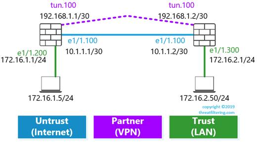

Site-To-Site VPNs on Palo Alto Networks Firewalls
Palo Alto Networks firewalls provide site-to-site and remote access VPN functionality. This article covers overview and configuration of IPSec site-to-site tunnels which are compatible with equipment from other vendors.
IPSec tunnel is established between two gateways over IP network and is transparent to end devices communicating over this tunnel. Transport network (usually Internet) between gateways is responsible for packet delivery from one gateway to another. Routers on the Internet cannot see original packet content including endpoints’ IP addresses, as packets are encrypted and new IP headers are being added by gateways.
Generally, it is relatively simple to establish a tunnel when you control devices on both sides of the tunnel. However, there might be cases in which you need to setup tunnel to a partner which can be using firewall from different vendor.
IPSec Overview
What parameters are required to setup an IPSec VPN tunnel?
IPSec relies on Security Associations to be established, which are agreed set of security attributes that both sides of a tunnel will be using to secure the traffic. Attributes are cryptographic algorithms and keys. Each Security Association is unidirectional and has an ID.
Protocol that is responsible for setting up these SAs is Internet Key Exchange (IKE). It’s operation in relation to setting up IKE SA is referred to as Phase 1. There are 2 versions, which must match between gateways – IKEv1 and IKEv2. Palo Alto Network supports both versions of protocol. IKEv2 is more recent and has many improvements over the first version, so it should be preferred if both sides support it.
Once the IKE version is known, authentication type must be agreed on. Options are pre-shared keys (PSK) or certificates. In my personal experience, majority of tunnels are using pre-shared keys. They are simpler to configure, and in many cases are the only option if the tunnel is established with a partner or a client.
The next set of parameters is required for IKE Phase 1 SA (or IKE SA) setup:
- Public-key based encryption for symmetrical shared key generation. Options are Diffie-Hellman (DH) Groups 1, 2, 5, 14, 19 and 20
- Authentication (SHA1, SHA256, SHA384, SHA512 and MD5)
- Encryption (3DES, AES-128-CBC, AES-192-CBC, AES-256-CBC and DES)
- Lifetime
Similar parameters must match for Phase 2 (or IPSec SA):
- Protocol – commonly used Encapsulating Security Payload (ESP) or less common due to lack of encryption capability – Authentication Header (AH)
- Public-key based encryption – Perfect Forward Secrecy (PFS), creates independent key for Phase 2. Options are Diffie-Hellman (DH) Group 1, 2, 5, 14, 19 and 20
- Authentication (SHA1, SHA256, SHA384, SHA512 and MD5)
- Encryption (3DES, AES-128-CBC, AES-192-CBC, AES-256-CBC, DES and additional algorithms – AES-128-CCM, AES-128-GCM, AES-256-GCM)
- Lifetime
And the final piece of the information is what traffic should be encrypted and whether tunnel to be setup is policy or route-based.
What is the difference between route- and policy-based IPSec VPN tunnels?
Route-based tunnel is usually represented as Layer 3 point-to-point interface between two gateways. Gateways encrypt all the packets that use other end of the tunnel as next hop after route lookup. Dynamic routing can also be set-up on this point-to-point interface.
Policy-based tunnels use access-lists to identify what traffic needs to be encrypted. Gateways must agree on list of source/destination network sets called Proxy IDs.
Palo Alto firewalls require use of IP routes and tunnel interfaces for both route- and policy-based tunnels, so if both sides support use of IP numbered L3 tunnel interface route-based option should be used.
Configuration Elements
So once all configuration parameters are known and agreed upon, the following configuration elements need to be configured:
- IKE Crypto Profile
- IPSec Crypto Profile
- IKE Gateway
- Tunnel Security Zone
- Tunnel Interface with Static (or Dynamic) route
- IPSec Tunnel
The following diagram display how elements interact with each other.
Step-By-Step VPN Configuration Example
The following sections demonstrate how to perform configuration using WebGUI and CLI for simple topology shown in the diagram below. Configuration is the mirrored on both firewalls, so only single firewall configuration is shown.
Step 1. IKE Crypto Profile
Web GUI
Navigate to the following menu: Network > Network Profiles > IKE Crypto > Add.
CLI
set network ike crypto-profiles ike-crypto-profiles IKE-CRYPTO-PROFILE-1 encryption aes-128-cbc
set network ike crypto-profiles ike-crypto-profiles IKE-CRYPTO-PROFILE-1 hash sha256
set network ike crypto-profiles ike-crypto-profiles IKE-CRYPTO-PROFILE-1 dh-group group2
set network ike crypto-profiles ike-crypto-profiles IKE-CRYPTO-PROFILE-1 lifetime hours 8
Step 2. IPSec Crypto Profile
Web GUI
Navigate to the following menu: Network > Network Profiles > IPSec Crypto > Add.
CLI
set network ike crypto-profiles ipsec-crypto-profiles IPSEC-PROFILE-1 esp encryption aes-128-cbc
set network ike crypto-profiles ipsec-crypto-profiles IPSEC-PROFILE-1 esp authentication sha256
set network ike crypto-profiles ipsec-crypto-profiles IPSEC-PROFILE-1 dh-group group2
set network ike crypto-profiles ipsec-crypto-profiles IPSEC-PROFILE-1 lifetime hours 1
Step 3. IKE Gateway
Web GUI
Navigate to the following menu: Network > Network Profiles > IKE Gateways > Add. Enter gateway name, IP address and pre-shared key. On Advanced Options tab select IKE Crypto Profile created earlier.
CLI
set network ike gateway IKE-GW-2 peer-address ip 10.1.1.2
set network ike gateway IKE-GW-2 authentication pre-shared-key key
set network ike gateway IKE-GW-2 local-address ip 10.1.1.1/30
set network ike gateway IKE-GW-2 local-address interface ethernet1/1.100
set network ike gateway IKE-GW-2 protocol-common nat-traversal enable no
set network ike gateway IKE-GW-2 protocol-common fragmentation enable no
set network ike gateway IKE-GW-2 protocol ikev1 dpd enable yes
set network ike gateway IKE-GW-2 protocol ikev1 ike-crypto-profile IKE-CRYPTO-PROFILE-1
Step 4. Tunnel Security Zone
Web GUI
Navigate to the following menu: Zones > Add. Type-in zone name and select Layer3 as type.
CLI
set zone PARTNER-VPN network layer3
Step 5. Tunnel Interface with Static (or Dynamic) route
Web GUI
Navigate to the following menu: Interfaces. Click on Tunnel tab and press Add. Type-in tunnel interface number, “default” as virtual router and security zone created in the previous step. Configure IP address on IPv4 tab.
To configure static route, navigate to Network > Virtual Routers, and then click on Default router, as shown in the screenshot below. Click on Static Routes tab, and press Add button.
Fill-in static route name, destination. As interface specify tunnel.100 with next hop of 192.168.1.2.
CLI
set network interface tunnel units tunnel.100 comment "To Partner B"
set network interface tunnel units tunnel.100 ip 192.168.1.1/30
set network virtual-router default interface [ ethernet1/1.100 tunnel.100 ]
set zone PARTNER-VPN network layer3 tunnel.100
set network virtual-router default routing-table ip static-route 172.16.2.0-24 path-monitor enable no
set network virtual-router default routing-table ip static-route 172.16.2.0-24 path-monitor failure-condition any
set network virtual-router default routing-table ip static-route 172.16.2.0-24 path-monitor hold-time 2
set network virtual-router default routing-table ip static-route 172.16.2.0-24 nexthop ip-address 192.168.1.2
set network virtual-router default routing-table ip static-route 172.16.2.0-24 bfd profile None
set network virtual-router default routing-table ip static-route 172.16.2.0-24 interface tunnel.100
set network virtual-router default routing-table ip static-route 172.16.2.0-24 metric 10
set network virtual-router default routing-table ip static-route 172.16.2.0-24 destination 172.16.2.0/24
set network virtual-router default routing-table ip static-route 172.16.2.0-24 route-table unicast
Step 6. IPSec Tunnel**
Web GUI
Navigate to the following menu: Network > IPSec Tunnels > Add. Type-in tunnel name, select tunnel interface, IKE Gateway and IPSec Crypto Profile created in earlier steps.
CLI
set network tunnel ipsec IPSEC-TUNNEL-1 auto-key ike-gateway IKE-GW-2
set network tunnel ipsec IPSEC-TUNNEL-1 auto-key ipsec-crypto-profile IPSEC-PROFILE-1
set network tunnel ipsec IPSEC-TUNNEL-1 tunnel-monitor enable no
set network tunnel ipsec IPSEC-TUNNEL-1 tunnel-interface tunnel.100
Step 7. Configure associated firewall rules and management profiles**
As part of the testing we will try to ping IP address of peer’s side of the tunnel. To allow this traffic that is terminated on the firewall itself, set-up new management profile on the tunnel interface.
For LAN-to-LAN traffic, two firewall rules will be required on each firewall:
- Trust to PARTNER-VPN
- PARTNER-VPN to Trust
Testing and troubleshooting
To bring the tunnel up, some traffic needs to be generated. Before that the status of the tunnel will be red as shown in the next screenshot. To check it navigate to Network > IPSec Tunnel and then click on Tunnel Info in the Status column.

As the interface is numbered, ping IP address of the peer’s tunnel interface.
admin@PA> ping source 192.168.1.1 host 192.168.1.2
PING 192.168.1.2 (192.168.1.2) from 192.168.1.1 : 56(84) bytes of data.
64 bytes from 192.168.1.2: icmp_seq=2 ttl=64 time=19.9 ms
64 bytes from 192.168.1.2: icmp_seq=3 ttl=64 time=19.2 ms
64 bytes from 192.168.1.2: icmp_seq=4 ttl=64 time=18.0 ms
64 bytes from 192.168.1.2: icmp_seq=5 ttl=64 time=7.25 ms
64 bytes from 192.168.1.2: icmp_seq=6 ttl=64 time=6.63 ms
64 bytes from 192.168.1.2: icmp_seq=7 ttl=64 time=15.1 ms
64 bytes from 192.168.1.2: icmp_seq=8 ttl=64 time=13.6 ms
64 bytes from 192.168.1.2: icmp_seq=9 ttl=64 time=11.9 ms
64 bytes from 192.168.1.2: icmp_seq=10 ttl=64 time=10.5 ms
64 bytes from 192.168.1.2: icmp_seq=11 ttl=64 time=8.87 ms
64 bytes from 192.168.1.2: icmp_seq=12 ttl=64 time=7.74 ms
64 bytes from 192.168.1.2: icmp_seq=13 ttl=64 time=16.1 ms
64 bytes from 192.168.1.2: icmp_seq=14 ttl=64 time=14.4 ms
64 bytes from 192.168.1.2: icmp_seq=15 ttl=64 time=13.2 ms
64 bytes from 192.168.1.2: icmp_seq=16 ttl=64 time=12.8 ms
^C
--- 192.168.1.2 ping statistics ---
16 packets transmitted, 15 received, 6% packet loss, time 15016ms
rtt min/avg/max/mdev = 6.636/13.051/19.993/4.133 ms
Now the tunnel status has changed to green and pop-up window display tunnel statistics, such as number of packets sent and received.
System log (Monitor > Logs > System) is populated with events as tunnel is getting established. To filter out VPN-only events filter the output using the filter shown in the next screenshot ( subtype eq vpn ).
To monitor and troubleshoot tunnels using CLI the following command:
tail follow yes mp-log ikemgr.log
It display live debug messages which are stored in ikemgr.log.
admin@PA> tail follow yes mp-log ikemgr.log
2019-04-22 04:42:37.231 -0700 [INFO]: { 2: 1}: IPsec-SA request for 10.1.1.2 queued since no phase1 found
2019-04-22 04:42:37.231 -0700 [PNTF]: { 2: }: ====> PHASE-1 NEGOTIATION STARTED AS INITIATOR, MAIN MODE <==== ====> Initiated SA: 10.1.1.1[500]-10.1.1.2[500] cookie:080a6143f9e82bf6:0000000000000000 <==== 2019-04-22 04:42:37.260 -0700 [INFO]: { 2: }: received Vendor ID: DPD 2019-04-22 04:42:37.260 -0700 [INFO]: { 2: }: received Vendor ID: PANOS - the new generation of firewall 2019-04-22 04:42:37.281 -0700 [PNTF]: { 2: }: ====> PHASE-1 NEGOTIATION SUCCEEDED AS INITIATOR, MAIN MODE <==== ====> Established SA: 10.1.1.1[500]-10.1.1.2[500] cookie:080a6143f9e82bf6:0dbe13611ce17303 lifetime 28800 Sec <==== 2019-04-22 04:42:37.281 -0700 [PNTF]: { 2: 1}: ====> PHASE-2 NEGOTIATION STARTED AS INITIATOR, (QUICK MODE) <==== ====> Initiated SA: 10.1.1.1[500]-10.1.1.2[500] message id:0x32339F97 <==== 2019-04-22 04:42:37.290 -0700 [PNTF]: { : 1}: ====> PHASE-2 NEGOTIATION SUCCEEDED AS INITIATOR, (QUICK MODE) <==== ====> Established SA: 10.1.1.1[500]-10.1.1.2[500] message id:0x32339F97, SPI:0xA5ED690D/0xB3A8ACFB <==== 2019-04-22 04:42:37.290 -0700 [INFO]: { 2: 1}: SADB_UPDATE proto=255 10.1.1.2[500]=>10.1.1.1[500] ESP tunl spi 0xA5ED690D auth=SHA256 enc=AES128/16 lifetime soft 3600/0 hard 3600/0
2019-04-22 04:42:37.290 -0700 [INFO]: { 2: 1}: SADB_ADD proto=255 10.1.1.1[500]=>10.1.1.2[500] ESP tunl spi 0xB3A8ACFB auth=SHA256 enc=AES128/16 lifetime soft 3122/0 hard 3600/0
2019-04-22 04:42:37.290 -0700 [INFO]: { 2: 1}: IPsec-SA established: ESP/Tunnel 10.1.1.2[500]->10.1.1.1[500] spi=2783799565(0xa5ed690d)
2019-04-22 04:42:37.290 -0700 [PNTF]: { : 1}: ====> IPSEC KEY INSTALLATION SUCCEEDED <==== ====> Installed SA: 10.1.1.1[500]-10.1.1.2[500] SPI:0xA5ED690D/0xB3A8ACFB lifetime 3600 Sec lifesize unlimited <====
The next step of the testing will be sending traffic over tunnel from test Windows machines. The commands in the screenshot below are launched from a Windows 7 workstation with IP address of 172.16.1.5 (on the left side of the lab diagram).
Traceroute shows that the packets are indeed flowing over tunnel and transport network (10.1.1.0/30) hops are not visible in the output.